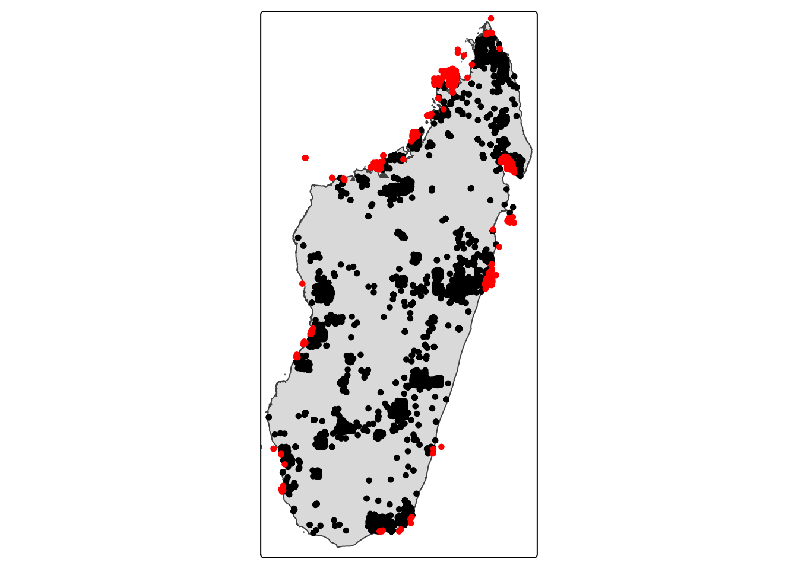
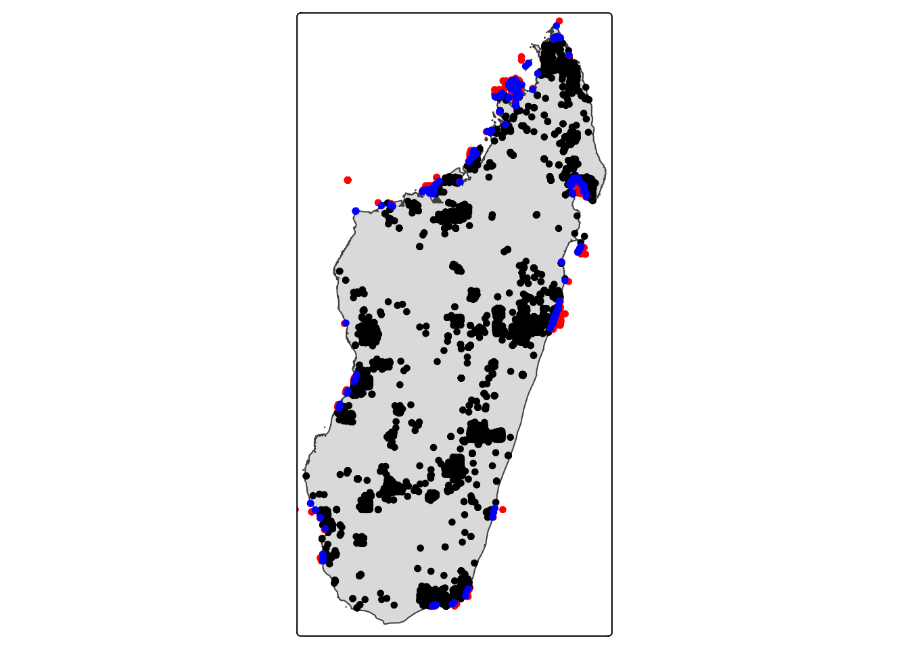

Omar Daniel
Leon-Alvarado¹²; J.Angel
Soto-Centeno²
¹ Department of Earth and Environmental Science, Rutgers University-Newark, NJ, USA.
² Department of Mammalogy, American Museum of Natural History, New
York City, NY, USA.
Beta diversity measures the variation in species composition among sites, communities, or raster cells. While alpha diversity describes diversity within a single site, beta diversity focuses on how different sites are from each other. In simple terms, beta diversity helps answer whether two cells contain similar or different sets of species.
Beta phylogenetic diversity extends this idea by incorporating the evolutionary relationships among species. Instead of comparing sites only based on shared or unique species, beta phylogenetic diversity compares how much evolutionary history is shared or different among communities. Therefore, two cells may have no species in common but still show low phylogenetic dissimilarity if their species are closely related. Conversely, two cells may be highly distinct if they contain species from distant evolutionary lineages. This makes beta phylogenetic diversity useful for evaluating spatial turnover in evolutionary history and identifying areas that contribute unique phylogenetic composition across the landscape.
0. The Indices
First, you need to know and understand the basics of each indices
available in vilma. At this version (1.0) vilma offers six
different Beta-PD indices, and the option to calculate species
richness.
| Index | Definition | Function |
|---|---|---|
| Beta Mean Nearest Taxon Distance | Measures beta phylogenetic diversity using the nearest phylogenetic-neighbor distances among communities or raster cells. It is based on MNTD and is sensitive to differences near the tips of the phylogeny. | beta.mntd |
| Beta Mean Pairwise Distance | Measures beta phylogenetic diversity using the mean pairwise phylogenetic distances among communities or raster cells. It is based on MPD and captures broader phylogenetic differences across the tree. | beta.mpd |
| Phylogenetic Beta Diversity | Estimates phylogenetic beta diversity by comparing the amount of shared and unique evolutionary history among communities. It can be calculated using weighted or unweighted approaches. | phylo.beta |
| PhyloSor | Measures phylogenetic similarity or dissimilarity among communities based on shared branch lengths. It is the phylogenetic equivalent of Sørensen-type similarity and is useful for evaluating shared evolutionary history among cells. | phylosor.calc |
| UniFrac | Measures phylogenetic dissimilarity among communities based on the fraction of branch length that is unique to each community. It can be calculated using unweighted or weighted approaches, depending on whether abundance information is included. | unifrac.calc |
| Rao’s Q Beta Diversity | Measures beta diversity using Rao’s quadratic entropy framework. It evaluates phylogenetic differences among communities based on pairwise phylogenetic distances and, optionally, abundance information. | rao.beta |
1. Data
Now that you know more about PD indices, it is time to proceed with the analyses. The spatial data consist of available occurrence records for all Primates species from Madagascar, obtained from GBIF. And for the phylogenetic tree, you will use the tree of Primates species from Madagascar available from VertLife.
First, load all needed libraries:
library(vilma)
library(ape)
library(phytools)
library(sf)
library(terra)
library(dplyr)
library(ggtree)
library(ggplot2)
library(patchwork)
library(reshape2)1.1. GBIF Data
In this exercise, you will perform standard spatial data analyses, which require selecting specific columns and filtering occurrences. First, read the downloaded data (a tab‑separated file – note that many people mistakenly expect commas and fail). Then, remove columns lacking coordinate information and rows not identified to the species level. Finally, extract the three columns required by vilma: Species, Longitude, and Latitude.
# Read the file
gbif_occ <- read.delim("../inst/extdata/Primates_Mad_GBIF.csv", na.strings = "")
# Check if you have any NA observation
any(is.na(gbif_occ$species))
any(is.na(gbif_occ$decimalLongitude))
any(is.na(gbif_occ$decimalLatitude))
gbif_occ <- gbif_occ[!is.na(gbif_occ$species), ]
# Exrtract the columns and check thm
prim_occ <- data.frame(Species = gbif_occ$species,
Lon = gbif_occ$decimalLongitude,
Lat = gbif_occ$decimalLatitude)
head(prim_occ, 5L)
#> Species Lon Lat
#> 1 Eulemur albifrons 50.17085 -15.77303
#> 2 Hapalemur aureus 47.32024 -21.39646
#> 3 Eulemur rubriventer 47.39409 -21.21686
#> 4 Eulemur fulvus 47.29641 -15.01195
#> 5 Propithecus candidus 49.76071 -14.56195Some occurrence records were not identified to the species level and therefore needed to be removed. After filtering, the dataset decreased from 17,489 to 17,278 records, which represents only a minor reduction. Although researchers often remove duplicate occurrences, this step is not mandatory in this case. The indices are calculated based on species presence or absence within each raster cell. Therefore, multiple records of the same species within a cell do not affect the results. However, the dataset should still be checked for other issues that are relatively easy to correct.
One of the most common problems is that occurrence records located near the coastline may appear in the sea because of GPS inaccuracies or spatial-resolution errors. The simplest solution would be to remove these records. However, because they may provide useful information, you will attempt to recover them by moving each point to the nearest location on the mainland.
Thus the first step here is to read the polygon map, in this case the boundaries of Madagascar. Then, you will transform the occurrences into a spatial object with the same projection as the polygon.
# Read the polygon
ma_pol <- read_sf("../inst/extdata/Madagascar.gpkg")
# Transform points into a spatal object
prim_occ <- prim_occ %>% st_as_sf(coords = c("Lon","Lat"), crs = 4326)
# Match the projection between the polygon and the points
prim_occ <- st_transform(prim_occ, st_crs(ma_pol))Now, using the spatial object and the mainland polygon, you will
intersect both layers to identify which occurrence records fall
inside and outside the mainland. Once
the records have been classified, plot the results using
tmap to visually inspect their locations.
# Extract the first column from the st_intersect result.
# This is a boolean vector (TRUE (inside), FALSE (outside))
occ_intersect <- st_intersects(prim_occ, st_union(ma_pol), sparse = F)[,1]
# Split the data
occ_inside <- prim_occ[occ_intersect,]
occ_outside <- prim_occ[!occ_intersect,]
library(tmap)
# Plot the results
tm_shape(ma_pol)+ # Plot the polygon
tm_polygons()+
tm_shape(occ_inside)+ # Add inside points
tm_dots()+
tm_shape(occ_outside)+ # Add outside points
tm_dots(fill="red")
Now, let’s fix those outside points. First, you will create a line
between each point and the country border using
st_nearest_points. This line represents the shortest
distance between the occurrence and the polygon boundary. Then, using
st_cast, you will convert each line into two points: the
starting point (the original occurrence) and the ending point (the
nearest location on the border). Finally, by using a grouping index, you
will extract the second point of each line—the endpoint—which
corresponds to the corrected coordinate located inside the country
boundaries.
library(terra)
# Create lines
nearest_lines <- st_nearest_points(occ_outside, st_union(ma_pol))
# Transform lines into points (start and end)
all_points <- st_cast(nearest_lines, "POINT")
# Create index ofr each point: 1,1,2,2,3,3...
point_groups <- rep(1:nrow(occ_outside), each = 2)
# Extract only the second point (end) and transform it into a spatial object
border_points <- all_points[seq(2, length(all_points), by = 2)] %>% st_as_sf()
library(terra)
# Plot
tm_shape(ma_pol)+ # Add polygon
tm_polygons()+
tm_shape(occ_inside)+ # Add inside points
tm_dots()+
tm_shape(occ_outside)+ # Add outside points
tm_dots(fill="red")+
tm_shape(border_points)+ # Add fixed points
tm_dots(fill="blue")
# Return spatial points into a data.frame (inside)
occ_inside <- cbind(st_drop_geometry(occ_inside),st_coordinates(occ_inside))
# Return spatial points into a data.frame (fixed)
border_points <- cbind(st_drop_geometry(occ_outside), st_coordinates(border_points))
# Join inside and fixed points
occ_final <- rbind(occ_inside, border_points)Now you finish to fix and clean your points. However, this is a basic step, usually it is recommend a more deep and detailed cleaning, but with this your a ready to go for the next step.
1.2 Phylogeny
For phylogenetic diversity indices, you need a phylogeny that represents the evolutionary history of the species and allows you to quantify their evolutionary distinctiveness. Therefore, the phylogeny must meet some minimum requirements. The first and most important requirement is that the phylogeny must have branch lengths, whether they are calibrated in time or represent genetic/change distances. The type of branch length you use depends on your research question, but remember that each type represents a different biological meaning and may lead to different interpretations. Some indices, such as Faith’s PD, require a rooted phylogeny. Although other indices do not necessarily require the tree to be rooted, I strongly recommend always using a rooted phylogeny.
In this step, you will read the tree file. In this case, the file
contains a set of 100 trees for the primates of Madagascar, so you will
need to calculate a final consensus tree. To estimate
the branch lengths of the consensus tree, you will use the function
consensus.edges from the phytools package,
although nnls.tree from the phangorn package
can also be used. Additionally, you will modify the species names and
save them in the phylogeny as tip.label. Specifically, you
will replace underscores with single spaces so that the species names
follow the same format used in the occurrence dataset.
# Read tree
prim_trees <- read.nexus("../inst/extdata/Prim_Madgascar_Tree.nex")
# Majority rule, you can change p to a higher value for a stricter tree
cons_topology <- consensus(prim_trees, p = 0.5)
# Calcualte branch length consensus
prim_tree <- consensus.edges(prim_trees, consensus.tree = cons_topology)
# Change underscore to space in the species' name
prim_tree$tip.label <- gsub("_"," ", prim_tree$tip.label)
# Root the tree, in this case mid point
prim_tree <- midpoint.root(prim_tree)
p <- ggtree(prim_tree) +
geom_treescale(fontsize = 1) + # Add a scale bar
theme_tree2()+ # Add a subtle background and axis
geom_tiplab(size = 3)
# Display the plot
print(p)
2. vilma.dist object
Now that the occurrence data and phylogeny are ready to use, you will
start with the first step: creating a vilma.dist object
using the function points_to_raster. The vilma package is
raster-oriented, so most results are returned as raster layers. In this
step, you will generate the raster for your study area and define the
resolution, or pixel size.
For the pixel resolution, the function only accepts values in decimal degrees. For example, if you plan to use the results together with WorldClim or CHELSA variables at 30-arc-second resolution, you should use 0.008333 degrees. The same logic applies to the other common resolutions: 2.5 arc-minutes = 0.041667, 5 arc-minutes = 0.083333, and 10 arc-minutes = 0.166667. Once you create the vilma.dist object, you can check the results using the function plot or view.vilma for an interactive view.
library(vilma)
# Create the vilma.dist object, for more information try ?points_to_raster
prim_dist <- points_to_raster(points = occ_final, res = 0.8)
# See the results
view.vilma(prim_dist)
# or use plot(prim_dist)3. Beta-PD indices
Now, you can calculate all beta phylogenetic diversity indices
available in vilma. Each beta-PD function creates a
vilma.beta object. This is a large S4 object that contains
the pairwise beta-diversity matrix, the list of raster outputs, summary
statistics, and information about the algorithm used.
Because beta-diversity indices are calculated as pairwise comparisons
among cells, vilma provides three different options to
transform these values into raster layers. The first option is to
calculate the mean beta-diversity value of each cell relative to all
other cells. The second option is to perform a Principal Coordinates
Analysis (PCoA) and use the first two axes as raster outputs. The third
option is to perform a Non-metric Multidimensional Scaling (NMDS) using
two axes. Therefore, the statistics associated with these ordination
methods, such as PCoA eigenvalues and NMDS stress, are also saved in the
vilma.beta object.
3.1. Between-Community Mean Pairwise Distance (betaMPD)
Between-community Mean Pairwise Distance (betaMPD) is a beta phylogenetic diversity index that measures the average phylogenetic distance between species from two different communities, sites, or raster cells. While alpha MPD summarizes the mean phylogenetic distance among species within a single cell, betaMPD compares species across pairs of cells. Therefore, betaMPD assesses how phylogenetically different two communities are.
The logic of betaMPD is based on pairwise comparisons between all species in one cell and all species in another cell. If the species in two cells belong to distant evolutionary lineages, betaMPD will be high. If the species in the two cells are closely related, betaMPD will be low. Thus, larger betaMPD values indicate greater phylogenetic differentiation between communities, whereas smaller values indicate greater phylogenetic similarity.
In vilma, betaMPD is calculated with the function
beta.mpd. This function requires a rooted phylogenetic tree
with branch lengths and a vilma.dist object containing the
species distribution across raster cells. This function takes different
arguments that you must consider.
The function can weight the betaMPD by abundance using the argument
abundance (default is FALSE). Also, the
argument exclude.conspecific controls whether comparisons
involving the same species across two different cells are included. If
exclude.conspecific = FALSE, conspecific matches are
included in the calculation. If exclude.conspecific = TRUE,
those same-species comparisons are removed, allowing the index to focus
only on distances among different species across cells. Like alpha-mpd,
this function handles single-species cells with the argument
mpd.method, using the same three options
exclude, root, and node.
The function also includes the argument normalize. If
normalize = TRUE, the between-community betaMPD value is
divided by the mean within-cell MPD of the two cells being compared.
This produces a relative, dimensionless value that expresses
between-cell phylogenetic distance in relation to the internal
phylogenetic structure of the two communities. However, this normalized
value is not necessarily restricted to a 0–1 range.
Finally, the argument scale01 can be used to rescale the
final betaMPD matrix between 0 and 1. This option is useful for
visualization, but it should be interpreted as a display transformation
rather than a change in the biological meaning of the index. Because the
scaling depends on the maximum value in the dataset, scaled values
should not be directly compared across different datasets or
phylogenies.
# Calculate the betaMPD
prim_bmpd <- beta.mpd(tree = prim_tree, dist = prim_dist, mpd.method = "root",
abundance = FALSE, exclude.conspecific = FALSE,
normalize = FALSE, scale01 = TRUE)
# Check the summary results
print(prim_bmpd)#>
#> vilma.beta Object Summary
#> -------------------------
#>
#> Communities (cells): 90
#> Pairwise comparisons: 4005
#>
#> betaMPD:
#> - Mean +/- SD: 0.8 +/- 0.1
#>
#> PCoA
#> - First two axes explain ~ 13.20% of total variance
#>
#> NMDS
#> - Stress: 0.244
#>
#> Available rasters:
#> - Mean similarity and dissimilarity per cell
#> - PCoA axes 1-2 and NMDS axes 1-2 (spatially mapped)
# Check the interactive map (see the different available layers)
view.vilma(prim_bmpd)3.2. Between-community Mean Nearest Taxon Distance (betaMNTD)
Between-community Mean Nearest Taxon Distance (betaMNTD) is a beta phylogenetic diversity index that measures the average phylogenetic distance between each species in one community and its nearest phylogenetic relative in another community, site, or raster cell. While alpha MNTD summarizes the mean distance from each species to its closest relative within a single cell, betaMNTD compares nearest relatives across pairs of cells. Therefore, betaMNTD assesses how phylogenetically different two communities are at the terminal or tip level of the phylogeny.
The logic of betaMNTD is based on nearest-neighbor comparisons between communities. For each species in one cell, the function identifies the closest relative present in the other cell and calculates that phylogenetic distance. The same procedure is then performed in the opposite direction, from the second cell to the first, and both directions are averaged. If species in two cells have close relatives in each other, betaMNTD will be low. If species in one cell do not have close relatives in the other cell, betaMNTD will be high. Thus, larger betaMNTD values indicate greater phylogenetic differentiation near the tips of the tree, whereas smaller values indicate greater phylogenetic similarity.
In vilma, betaMNTD is calculated with the function
beta.mntd. This function requires a rooted phylogenetic
tree with branch lengths and a vilma.dist object containing
the species distribution across raster cells. This function takes
different arguments that you must consider.
The function can weight betaMNTD by abundance using the argument
abundance; the default is FALSE. Also, the
argument exclude.conspecific controls whether comparisons
involving the same species across two different cells are included. If
exclude.conspecific = FALSE, conspecific matches are
included in the calculation. If exclude.conspecific = TRUE,
those same-species comparisons are removed, allowing the index to focus
only on distances among different species across cells. Like alpha MNTD,
this function handles single-species cells with the argument
mntd.method, using the same three options:
exclude, root, and node.
The function also includes the argument normalize. If
normalize = TRUE, the between-community betaMNTD value is
divided by the mean within-cell MNTD of the two cells being compared.
This produces a relative, dimensionless value that expresses
between-cell nearest-taxon distance in relation to the internal
phylogenetic structure of the two communities. However, this normalized
value is not necessarily restricted to a 0–1 range.
Finally, the argument scale01 can be used to rescale the
final betaMNTD matrix between 0 and 1. This option is useful for
visualization, but it should be interpreted as a display transformation
rather than a change in the biological meaning of the index. Because the
scaling depends on the maximum value in the dataset, scaled values
should not be directly compared across different datasets or
phylogenies.
# Calculate the betaMPD
prim_bmntd <- beta.mntd(tree = prim_tree, dist = prim_dist, mntd.method = "root",
abundance = FALSE, exclude.conspecific = FALSE,
normalize = FALSE, scale01 = TRUE)
# Check the summary results
print(prim_bmntd)#>
#> vilma.beta Object Summary
#> -------------------------
#>
#> Communities (cells): 90
#> Pairwise comparisons: 4005
#>
#> betaMNTD:
#> - Mean +/- SD: 0.3 +/- 0.2
#>
#> PCoA
#> - First two axes explain ~ 13.71% of total variance
#>
#> NMDS
#> - Stress: 0.232
#>
#> Available rasters:
#> - Mean similarity and dissimilarity per cell
#> - PCoA axes 1-2 and NMDS axes 1-2 (spatially mapped)
# Check the interactive map (see the different available layers)
view.vilma(prim_bmntd)3.3. Phylogenetic Beta Diversity Partitioning (phylobeta)
Phylogenetic Beta Diversity Partitioning is a
beta-diversity approach that measures the dissimilarity in evolutionary
history between two communities, sites, or raster cells. In
vilma, this index is calculated with the function
phylo.beta, which partitions total phylogenetic beta
diversity into three components: total dissimilarity,
turnover, and nestedness.This function
requires a rooted phylogenetic tree with branch lengths and a vilma.dist
object containing the species distribution across raster cells. The
function compares communities using branch-length information from the
tree and returns pairwise distance matrices for total dissimilarity,
turnover, and nestedness.
The logic of phylo.beta is based on comparing the amount
of branch length shared and not shared between two communities.
Total phylogenetic dissimilarity, represented by β_sor,
measures the overall difference in evolutionary history between two
cells. The turnover component, β_sim, represents the
replacement of evolutionary lineages between cells. The
nestedness component, β_sne, represents the portion of
the dissimilarity attributable to one community containing a subset of
the evolutionary history present in another community. Therefore,
phylo.beta is useful not only for measuring how different
two cells are, but also for understanding whether that difference is
mainly due to lineage replacement or to differences in the amount of
evolutionary history present in each cell.
The function includes the argument method, which can be
set to unweighted or weighted. If
method = "unweighted", the calculation is based on species
presence or absence on the phylogeny. In this case, the index evaluates
whether branches are shared or unique between communities. If
method = "weighted", the calculation incorporates abundance
information by weighting branches according to the relative abundance of
the species they descend from.
The argument normalize is used when method = "weighted".
If normalize = TRUE, which is the default, within-cell
abundances are converted to relative abundances before branch-level
values are calculated. This allows the indices to remain within the
range from 0 to 1 and makes communities with different total numbers of
records more comparable. If normalize = FALSE, raw counts
are used, which may emphasize differences in sampling intensity or total
abundance among cells.
The output of phylo.beta is a vilma.beta
object. This object contains three pairwise distance matrices:
total.dissimilarity for β_sor, turnover for β_sim, and nestedness for
β_sne. It also includes raster outputs summarizing the mean value of
each component per cell, as well as PCoA and NMDS ordination axes mapped
into geographic space. The associated statistics, such as PCoA
eigenvalues and NMDS stress values, are also saved in the object.
# Calculate the betaMPD
prim_phyb <- phylo.beta(tree = prim_tree, dist = prim_dist, method = "unweighted")
# Check the summary results
print(prim_phyb)#>
#> vilma.beta Object Summary
#> -------------------------
#>
#> Communities (cells): 90
#> Pairwise comparisons: 4005
#>
#> Phylo Beta Diversity:
#> - Mean +/- SD: NaN +/- NA
#>
#> Turnover:
#> - Mean +/- SD: 0.2 +/- 0.2
#>
#> Nestedness:
#> - Mean +/- SD: 0.3 +/- 0.2
#>
#> PCoA
#> - Total: First two axes explain ~ 24.42% of total variance
#> - Turnover: First two axes explain ~ 4.12% of total variance
#> - Nestedness: First two axes explain ~ 12.30% of total variance
#>
#> NMDS
#> - Total Stress: 0.218
#> - Turnover Stress: 0.314
#> - Netedness Stress: 0.103
#>
#>
#> Available rasters:
#> - Mean Total, Turnover, and Nestedness per cell
#> - PCoA axes 1-2 and NMDS axes 1-2 (spatially mapped)
# Check the interactive map (see the different available layers)
view.vilma(prim_phyb)3.4. Phylogenetic Sørensen Similarity (PhyloSor)
Phylogenetic Sørensen Similarity (PhyloSor) is a beta phylogenetic diversity index that measures the extent to which evolutionary history is shared between two communities, sites, or raster cells. While traditional Sørensen similarity compares communities based only on shared species, PhyloSor extends this idea by comparing the amount of shared branch length in a phylogenetic tree. Therefore, PhyloSor assesses the phylogenetic similarity between two communities.
The logic of PhyloSor is based on the proportion of phylogenetic diversity shared by two communities. If two cells share many branches of the phylogeny, their PhyloSor similarity will be high. If they share little evolutionary history, their similarity will be low. Thus, larger PhyloSor values indicate greater phylogenetic similarity between communities, whereas smaller values indicate greater phylogenetic dissimilarity. The complementary dissimilarity is calculated as 1 - similarity.
In vilma, PhyloSor is calculated with the function
phylosor.calc. This function requires a rooted phylogenetic
tree with branch lengths and a vilma.dist object containing
the species distribution across raster cells. The function returns both
a PhyloSor similarity matrix and a complementary dissimilarity
matrix.
The function includes the argument method, which
controls how phylogenetic diversity is calculated for single-species
cells. The available options are root, node,
and exclude. The argument singleton_overlap
controls how the function treats pairs of cells that share exactly one
species. If singleton_overlap = FALSE, that single shared
species contributes to shared phylogenetic diversity according to the
selected method. If singleton_overlap = TRUE, pairs sharing
only one species are treated as having no shared phylogenetic diversity,
and their similarity is set to zero. This option is important because
single-species overlap can strongly influence similarity values in
sparse datasets.
The function can also calculate abundance-weighted PhyloSor with the abundance argument. If abundance = FALSE, which is the default, the calculation uses presence-absence data. If abundance = TRUE, branch contributions are weighted by species abundances within each cell. When abundance is used, the argument normalize controls whether abundances are converted to relative abundances before calculating similarity. If normalize = TRUE, the default, each cell is standardized so that its abundances sum to 1, yielding similarity values between 0 and 1. If normalize = FALSE, raw counts are used, which may emphasize differences in sampling intensity or total abundance among cells.
The output of phylosor.calc is a vilma.beta object. This
object contains the PhyloSor similarity matrix, the complementary
dissimilarity matrix, raster layers summarizing the mean similarity and
mean dissimilarity for each cell, and ordination rasters from PCoA and
NMDS. The associated statistics, such as PCoA eigenvalues and NMDS
stress values, are also saved.
# Calculate the betaMPD
prim_phys <- phylosor.calc(tree = prim_tree, dist = prim_dist, singleton_overlap = FALSE,
method = "root", abundance = FALSE, normalize = FALSE)
# Check the summary results
print(prim_phys)#>
#> vilma.beta Object Summary
#> -------------------------
#>
#> Communities (cells): 90
#> Pairwise comparisons: 4005
#>
#> Similarity:
#> - Mean +/- SD: 0.3 +/- 0.2
#>
#> Dissimilarity:
#> - Mean +/- SD: 0.7 +/- 0.2
#>
#> PCoA (dissimilarity)
#> - First two axes explain ~ 11.20% of total variance
#>
#> NMDS
#> - Stress: 0.196
#>
#> Available rasters:
#> - Mean similarity and dissimilarity per cell
#> - PCoA axes 1-2 and NMDS axes 1-2 (spatially mapped)
# Check the interactive map (see the different available layers)
view.vilma(prim_phys)3.5. Rao Beta phylogenetic dissimilarity (Rao beta)
Rao Beta phylogenetic dissimilarity is a beta phylogenetic diversity index that measures the expected phylogenetic dissimilarity between two individuals drawn from two different communities, sites, or raster cells. While Rao’s alpha diversity evaluates phylogenetic dissimilarity within a single community, Rao Beta compares phylogenetic composition between pairs of communities. Therefore, Rao Beta assesses how phylogenetically different two communities are while considering the relative contribution of species within each cell.
The logic of Rao Beta is based on comparing the phylogenetic distances among species across communities while also accounting for the phylogenetic diversity already present within each community. If two cells contain similar species or closely related lineages, Rao Beta will be low. If two cells contain species from distant evolutionary lineages, Rao Beta will be high. Thus, larger Rao Beta values indicate greater phylogenetic dissimilarity or turnover between communities, whereas smaller values indicate greater phylogenetic similarity.
In vilma, Rao Beta is calculated with the function
rao.beta. This function requires a rooted phylogenetic tree
with branch lengths and a vilma.dist object containing the
species distribution across raster cells. The function can calculate Rao
Beta using presence-absence data or abundance information. If
abundance = FALSE, which is the default, the
cell-by-species table is converted to presence-absence before
calculating proportions.
The function also includes the argument scale01. If
scale01 = TRUE, which is the default, the patristic
distance matrix is divided by its maximum off-diagonal value, so
phylogenetic distances range from 0 to 1. Under this scaling, Rao Beta
values also range approximately from 0 to 1. A value close to 0
indicates very similar phylogenetic composition between two cells, while
a value close to 1 indicates strong phylogenetic dissimilarity or
maximal turnover.
The output of rao.beta is a vilma.beta object. This
object contains the pairwise Rao Beta dissimilarity matrix, a raster
layer summarizing the mean dissimilarity of each cell relative to all
other cells, and ordination rasters based on PCoA and NMDS. The
associated statistics, such as PCoA eigenvalues and NMDS stress values,
are also saved in the object.
# Calculate the betaMPD
prim_raob <- rao.beta(tree = prim_tree, dist = prim_dist, abundance = FALSE, scale01 = TRUE)
# Check the summary results
print(prim_raob)#>
#> vilma.beta Object Summary
#> -------------------------
#>
#> Communities (cells): 90
#> Pairwise comparisons: 4005
#>
#> Rao Beta Diversity:
#> - Mean +/- SD: 0.1 +/- 0.1
#>
#> PCoA
#> - First two axes explain ~ 15.44% of total variance
#>
#> NMDS
#> - Stress: 0.132
#>
#> Available rasters:
#> - Mean Rao Beta per cell
#> - PCoA axes 1-2 and NMDS axes 1-2 (spatially mapped)
# Check the interactive map (see the different available layers)
view.vilma(prim_raob)3.6. Unique Fraction Metric (UniFrac)
UniFrac phylogenetic dissimilarity is a beta phylogenetic diversity index that measures how different two communities, sites, or raster cells are based on the amount of evolutionary history that is unique to each community. Unlike traditional beta-diversity indices that compare only species identities, UniFrac uses the branch lengths of a phylogenetic tree to evaluate whether two communities share or differ in their evolutionary lineages.
The logic of UniFrac is based on the proportion of branch length that is unique to each community. If two cells share most of their evolutionary history, their UniFrac distance will be low. If each cell contains lineages not present in the other, their UniFrac distance will be high. Thus, larger UniFrac values indicate greater phylogenetic dissimilarity between communities, whereas smaller values indicate greater phylogenetic similarity.
In vilma, UniFrac is calculated with the function
unifrac.calc. This function requires a rooted phylogenetic
tree with branch lengths and a vilma.dist object. The
function includes the argument method, which can be set to
unweighted or weighted. If
method = "unweighted", UniFrac is calculated using
presence-absence data. In this case, the index evaluates the fraction of
the branch length unique to each community relative to the total branch
length shared by both communities. This version is useful when the focus
is on differences in lineage composition, regardless of abundance. If
method = "weighted", UniFrac incorporates relative
abundance information. In this case, the function compares the
abundance-weighted fraction of each branch across communities.
Therefore, weighted UniFrac not only considers whether lineages are
present or absent, but also how strongly they are represented within
each cell. This version is useful when differences in dominance or
relative abundance among lineages are important.
In both cases, UniFrac values range from 0 to 1. Values close to 0 indicate that two cells share most of their phylogenetic composition, while values close to 1 indicate strong phylogenetic dissimilarity or high lineage turnover. The unweighted version emphasizes differences in the presence or absence of evolutionary lineages, while the weighted version emphasizes differences in their relative representation.
The output of unifrac.calc is a vilma.beta
object. This object contains the pairwise UniFrac dissimilarity matrix,
a raster layer summarizing the mean UniFrac dissimilarity of each cell
relative to all other cells, and ordination rasters based on PCoA and
NMDS. The associated statistics, such as PCoA eigenvalues and NMDS
stress values, are also saved in the object.
# Calculate the betaMPD
prim_uni <- unifrac.calc(tree = prim_tree, dist = prim_dist, method = "weighted")
# Check the summary results
print(prim_uni)#>
#> vilma.beta Object Summary
#> -------------------------
#>
#> Communities (cells): 90
#> Pairwise comparisons: 4005
#>
#> UniFrac:
#> - Mean +/- SD: 0.4 +/- 0.1
#>
#> PCoA
#> - First two axes explain ~ 31.89% of total variance
#>
#> NMDS
#> - Stress: 0.184
#>
#> Available rasters:
#> - Mean similarity and dissimilarity per cell
#> - PCoA axes 1-2 and NMDS axes 1-2 (spatially mapped)
# Check the interactive map (see the different available layers)
view.vilma(prim_uni)4. Saving results.
Once you have selected the index or indices that you want to keep and
use for further analyses, vilma allows you to save the beta
phylogenetic diversity results using the function
write.vilma.beta. This function requires a
vilma.beta object, a file name, which can also
include the output directory path, and the raster.format
argument. The available raster format options are tif,
grd, and `.
The function generates different output files. First, it creates a
CSV file containing the values associated with each
raster cell, including species richness, phylogenetic diversity values,
and any other index-specific results. Second, it saves the
raster layers available in the vilma.beta
object using the raster format specified by the user. Third, it
generates a log file containing the summary information
of the vilma.beta object, equivalent to the information
displayed when using the print function. The numbe of files will depend
on the index used, please see help panel for further information
(?write.vilma.beta) Let see this example saving the results
of `rao.beta``.
# Saving the results as
write.vilma.pd(vilma.beta = prim_raob, file = "results/Prim_Madagascar",
raster.format = "tif", overwrite = TRUE)The output folder will looks like:
results/
├── Prim_Madagascar_RaoBeta.csv
├── Prim_Madagascar__mean.dissimilarity.tif
├── Prim_Madagascar__ndms.1.tif
├── Prim_Madagascar__ndms.2.tif
├── Prim_Madagascar__pcoa.1.tif
├── Prim_Madagascar__pcoa.2.tif
└── Prim_Madagascar_raoB_log.txt5. Conclusion
In this tutorial, you learned how to calculate beta phylogenetic
diversity indices in vilma using occurrence data, a
phylogenetic tree, and a vilma.dist object. You explored
several indices, including betaMPD, betaMNTD, phylogenetic
beta-diversity partitioning, PhyloSor, Rao Beta, and UniFrac.
Each index captures a different aspect of phylogenetic variation among raster cells, such as lineage turnover, shared evolutionary history, nearest-taxon differences, nestedness, or abundance-weighted dissimilarity. Because beta diversity is calculated through pairwise comparisons among cells, vilma summarizes the results as distance or similarity matrices, mean beta-diversity rasters, and ordination layers based on PCoA and NMDS.
Finally, you learned how to save beta-diversity results using
write.vilma.beta, including raster outputs, cell-level
tables, and log files. Overall, vilma provides a flexible
raster-based framework to evaluate how evolutionary history changes
across space and to identify areas with distinct phylogenetic
composition.